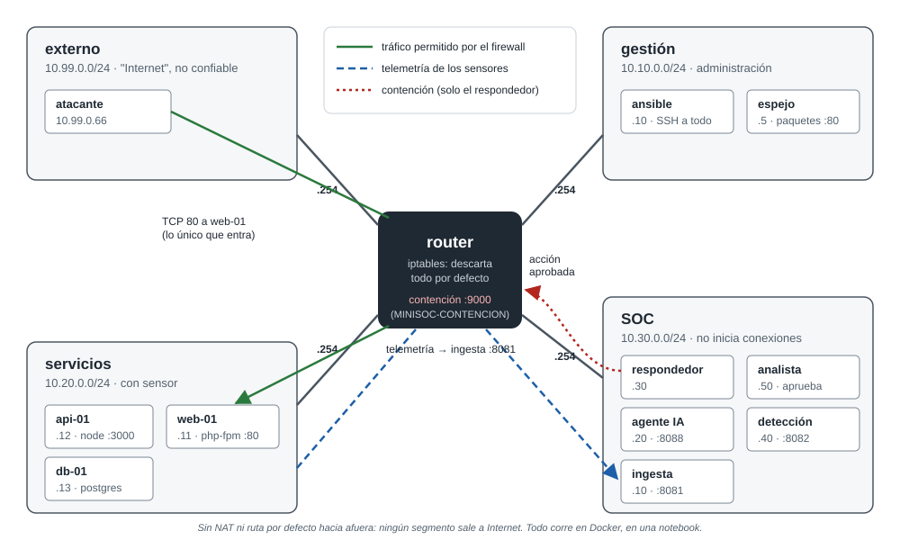
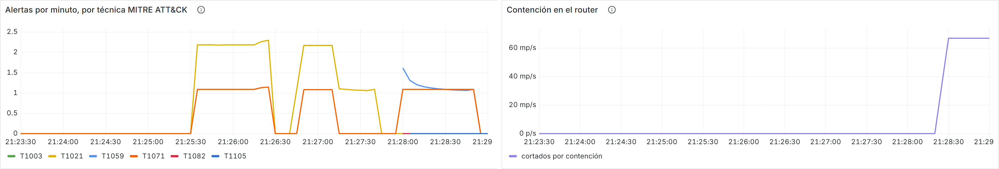

Problema y objetivo
Problema: un SOC recibe más alertas de las que puede revisar. Un modelo de lenguaje ayuda a analizarlas, pero puede afirmar algo sin evidencia o cambiar la red sin supervisión.
Objetivo: detectar, investigar y contener ataques con un LLM local que cite la evidencia, con aprobación humana y cada decisión auditable. Todo corre en una notebook, sin Internet.
Arquitectura de red

Cuatro redes de Docker unidas por un router con
iptables: todo lo no permitido se descarta y nadie sale a Internet.
El SOC no inicia conexiones; para contener, le pide al router.
Cómo funciona
- Sensor en cada servicio: procesos y conexiones nuevas
- Detección: 9 reglas MITRE ATT&CK
- Correlación: alertas del mismo host → un incidente
- Agente de IA (Llama 3.1 8B local): veredicto citando los eventos
- Analista aprueba → el router bloquea o aísla
Docker Compose · iptables · Ansible · Prometheus · Grafana · Ollama · Python. Cada paso del agente queda en un ledger con hash encadenado.
Resultados

Conclusiones
- Lo que hace seguro al sistema no es el modelo, sino los controles. Ningún modelo resistió la inyección de prompt: la frenaron la validación de su respuesta y la aprobación humana.
- Automatizar y medir hace reproducible la demo: un comando la reconstruye y la verifica, y el dashboard muestra en vivo el ataque, el veredicto y la contención.
- Límites: los modelos chicos se equivocan seguido; dentro de un segmento no hay filtrado. A futuro: microsegmentación y un sensor eBPF.